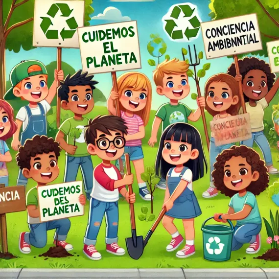

Inicio
¡Bienvenidos Guardianes del Planeta! 🌍
El medio ambiente está en peligro, y la Tierra necesita de su ayuda. Como expertos recién asignados a un equipo especial de sostenibilidad, tienen la misión de diseñar un plan de acción para convertir su comunidad en un modelo de sostenibilidad ambiental a través de una grandiosa campaña concientizadora. ¿Están listos para aceptar este desafío?
